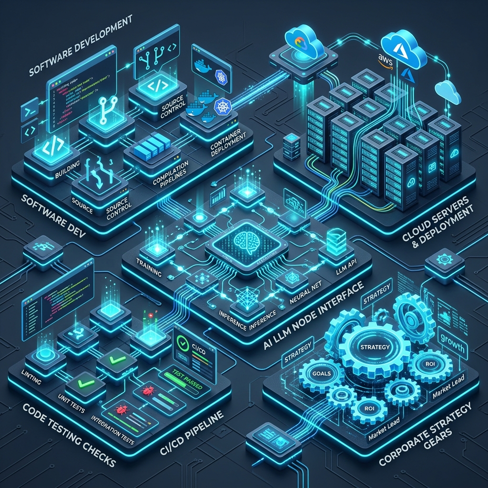

Our Software Engineering Offerings
We provide full-lifecycle software engineering and AI implementation. Explore our core service verticals below.
Next-Generation Enterprise Resource Planning (ERP)
Modern operations require real-time transparency. Our custom ERP solutions unify complex operational threads into a single, cohesive digital platform. Instead of heavy, rigid legacy setups, we engineer flexible, event-driven web environments custom-built for your specific business rules.
We specialize in integrating inventory sync, automated supply chain forecasting, real-time ledgers, and multi-currency billing engines. Our architectures rely on robust API layers, database optimization (PostgreSQL/Redis), and secure containerized infrastructure to handle sudden peaks in transactions without delay.
- Automated inventory reconciliation and live ledger bookkeeping.
- Advanced vendor order placement workflows and supply-chain predictive planning.
- Granular role-based access control (RBAC) and audit logging for security compliance.
- Integration support for older accounting, shipping, and CRM software.

Intelligent Field Services Platforms
Managing field workers requires instant coordination and smart data synchronization. Yelagiri Infotech designs and builds comprehensive field service platforms that keep dispatchers and field engineers in constant alignment.
At the heart of our field platforms is a custom routing engine that analyzes traffic patterns, technician skill sets, and job locations to optimize travel schedules. Our mobile client apps are built with offline-first synchronization capabilities, allowing field technicians to view repair manuals, capture customer signatures, and log inventory use even in low-signal areas, syncing immediately when back online.
- Algorithmic route optimization and live GPS location sharing.
- Mobile client applications featuring offline SQLite databases.
- Interactive dispatcher console with drag-and-drop scheduling calendars.
- Automated client notification workflows via SMS and email.
Technical Strategy & Architecture Consulting
Poor architectural planning can quickly limit enterprise growth. Our technology strategy consultants perform deep system reviews to identify performance bottlenecks, single points of failure, and security risks in your software stack.
We assist executive teams in mapping out secure cloud migrations, refactoring monolithic code into highly scalable microservices, and assessing AI readiness. We provide practical, step-by-step development paths that ensure your software infrastructure scales cost-effectively alongside your growing user base.
- Monolith-to-microservice migration plans and serverless designs.
- Multi-cloud cost optimization plans (AWS, GCP, Azure).
- Disaster recovery planning, database backup policies, and system failover strategies.
- Corporate AI readiness workshops and technical vendor evaluation.
Comprehensive Quality Assurance & Software Testing
Reliability is essential for keeping client trust. Yelagiri Infotech applies strict software testing frameworks across every layer of your application. We design and execute automated test suites that run continuously during code builds to catch issues before deployment.
Our QA capability covers end-to-end user path simulation, API contract verification, and rigorous performance testing (load, spike, and soak testing). We verify that your platforms remain fast, secure, and fully functional under heavy usage.
- Continuous CI/CD integration with automated testing tools.
- Load and stress profiling to identify scale ceilings.
- API contract validation and automated security vulnerability checks.
- Real-device mobile and browser layout verification testing.
Private LLM Deployment & AI Agent Engineering
Moving past generic chat interfaces, we build custom Large Language Model (LLM) workflows that connect directly with your company's data. We design secure Retrieval-Augmented Generation (RAG) structures, enabling employees and customers to query complex knowledge bases with near-zero hallucinations.
By using vector databases (like Pinecone, Milvus, or PGVector) and open-source models (Llama-3, Mistral, Qwen) hosted locally or in private clouds, we ensure your operational data never leaves your secure boundary. We also design autonomous AI agents that can handle multi-step back-office processing tasks.
- Bespoke RAG engines utilizing high-performance vector search databases.
- Fine-tuning models on proprietary document repositories and custom terminology.
- Autonomous agent design for database queries and email ticketing workflows.
- System integrations using orchestration tools like LangChain and LlamaIndex.
Need a Tailored Technical Architecture?
Our engineering leads are ready to review your requirements. Contact us to receive an initial high-level blueprint matching your operational goals.
Request Engineering Brief